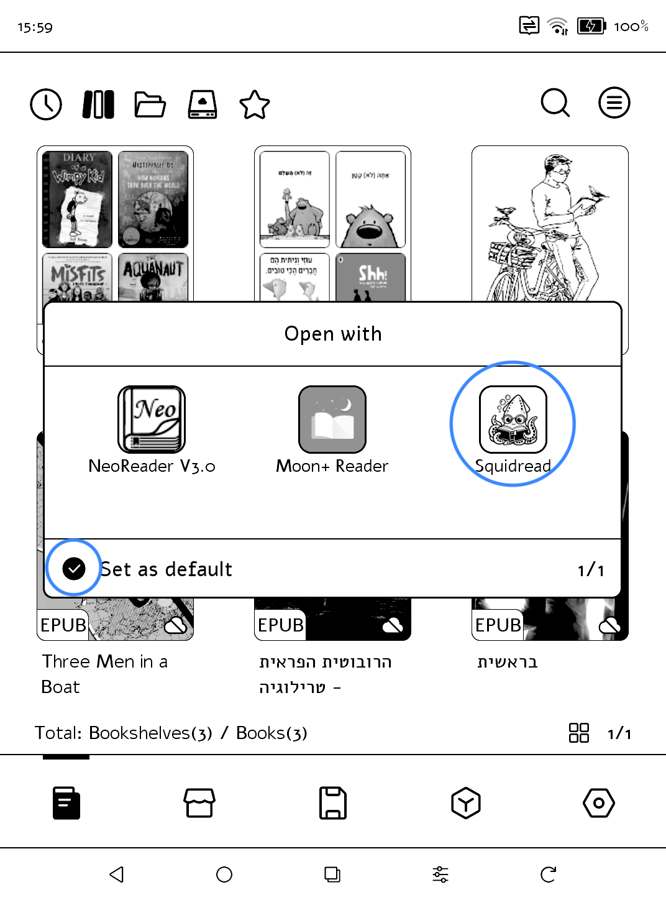
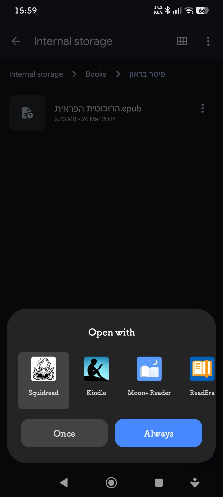

Make Squidread your default reader
Set it once, and your books open straight in Squidread.
-

Boox - Long press a book and tap Open with.
- Tick Set as default and choose Squidread.
-

Android - Tap an EPUB file in your file manager, or long press it and tap Open with.
- Choose Squidread, then Always.